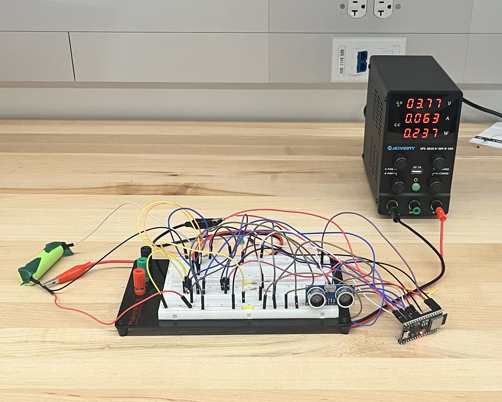
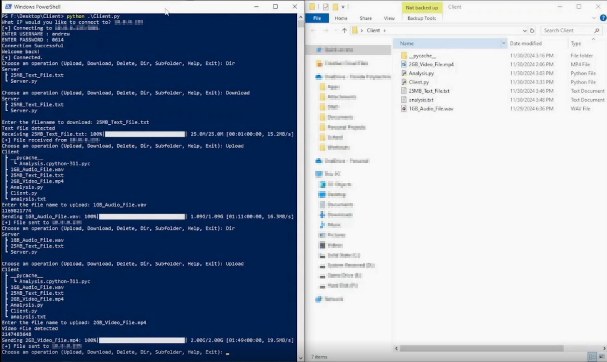

Senior Design Project - Water Level SensorOctober 2024 - May 2025
For our Senior Design Project, a team of five students, including myself, worked with a Central Florida mining company called Mosaic. We were tasked with designing a device to measure the water level of ditches surrounding their property to keep contaminated water inside the facility. The device needed to be self powered and transmit wirelessly, as they could not feasibly run wires around the entire perimeter of their property. My specific role on the team was to design the sensor itself, which used an ultrasonic sensor to determine the distance between the surface of the water and the sensor allowing the water depth to be calculated. The module was powered using a solar pannel managed by two batteries, and it transmitted data via the ESPnow protocol. We presented the prototype to our representative at Mosaic at our university's Capstone Fair.

Server-Client File Transfer PlatformOctober 2024 - December 2024
A team of four students, including myself, were tasked with creating a platform to transfer files between a single server and multiple disconnected clients. The platform was programmed in Python using server sockets. The client side sent, downloaded, and deleted files, and created and deleted server directories. The server side recieved commands from the client and stored the files. Each client had its own password to ensure security, stored on the server in an encrypted file.
Serial Text Message Embedded System
April 2024 - May 2024
I was tasked with creating an embedded system that could recieve text messages via serial input and display them for viewing on an ARM microcontroller. The device had to be capable of recieving and storing up to 10 messages, that could then be stored and displayed in a readable format for the viewer on the microcontroller's screen. the user had to be able to scroll between the messages, and if a message was too large, it needed functionality to scroll through individual messages.
COMAP MCM - Mathematical Contest in Modelling
February 2024
A team of three students, including myself, were tasked with modelling the population of lampreys over time. The modelling took into account seasons, food availability, current population ratios, and current population sizes to create a carrying capacity function to model it against population growth.
Phototransistor Motion Detector
November 2023 - December 2023
Myself and another student were tasked with creating a device using AVR C and an Arduino microcontroller. We deviced on making a motion detector using a laser diode and phototransistor. When the laser pointing towards the phototransistor was interupted, it triggered an alarm which could not be turned off until a password is input.
 SIMIODE Challenge Using Differential Equations Modelling
SIMIODE Challenge Using Differential Equations Modelling
October 2023 - November 2023
A team of three students, including myself, were tasked with modelling the ability of a dog to catch food thrown at it. The situation was very open ended so we could take any path that we wanted. We used kinematics to model the food as it travels through the air, and we modeled the dog's mouth as a dampened spring-mass system.
Four Digit Stopwatch
November 2022 - December 2022
I was tasked with implementing the functions of a four digit stop watch onto an FPGA using the Verilog language. The device had to increment a register value at a regular time interval and convert the value to a readable format using a seven segment display.